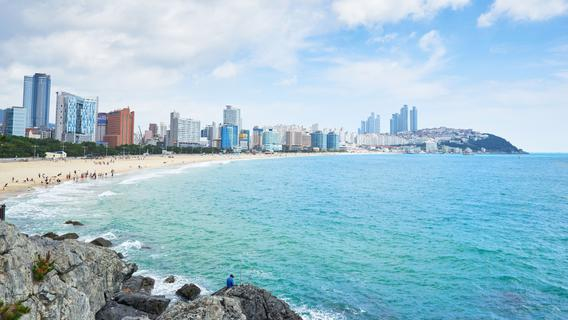

광안대교
광안대교는 부산 해운대 지구 센텀 시티와 수영구 남천동을 연결하는 현수교로 한국에서 가장 큰 교차 다리이며 부산의 랜드 마크 중 하나이며 부산의 인기있는 명소입니다.
광안대교 홈페이지 바로가기감천문화마을
감천문화마을은 1950년대 태극도 신앙촌 신도와 6.25 피난민의 집단 거주지로 형성된 곳으로 산자락을 따라 질서정연하게 늘어선 계단식 집단 주거형태와 모든 길이 통하는 미로미로 골목길의 독특한 경관을 자랑하는 곳이다.
감천문화마을 홈페이지 바로가기해운대
해운대는 부산광역시 부도심의 하나로 해운대해수욕장과 광안리해수욕장을 비롯하여 동백섬, 영화의전당, 달맞이고개, 해운대온천, 오륙도, UN기념공원, 수영사적공원, 광안대교 등의 부산의 상징들과 유명 관광지가 있고 호텔, 식당가, 영화관 및 쇼핑몰 등 위락 시설이 많으며 해운대 신시가지와 마린시티에는 대규모 주거단지가 있다.
해운대구청 홈페이지 바로가기
